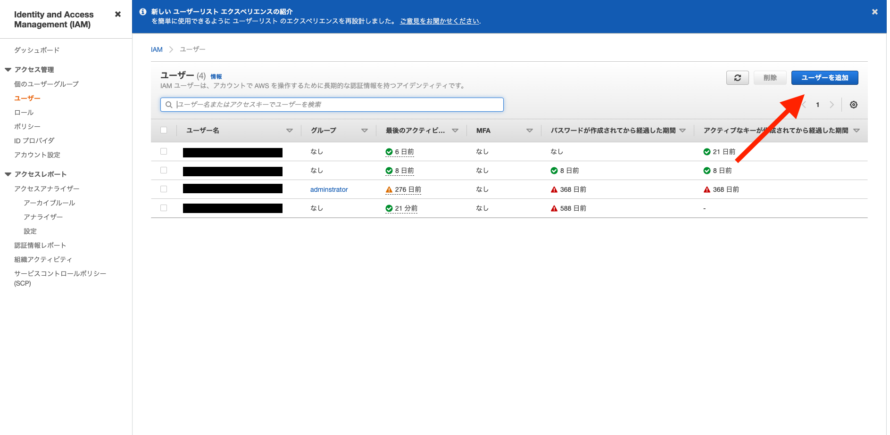
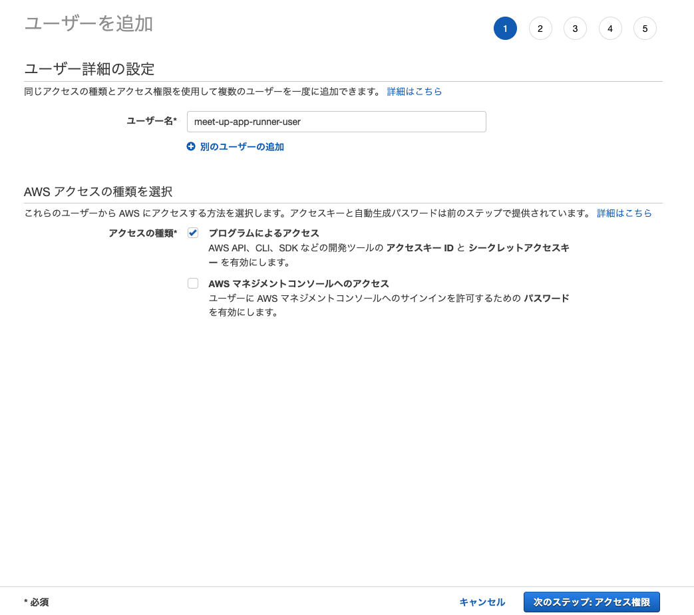
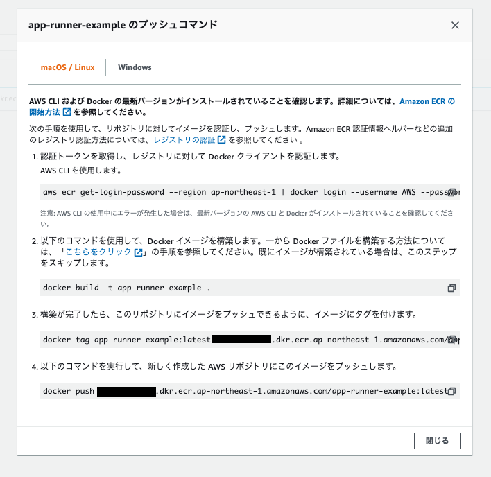

コンテナレジストリパターン
今回はコンテナレジストリにECRを利用します。
1. ECRリポジトリ作成
AWSにログインし、検索欄から「ECR」と検索します。
リポジトリを作成ボタンをクリックします。 リポジトリ名に
リポジトリ名にapp-runner-exampleと入力します。
2. ECR用IAM User作成
ローカルからECRにpushするためのIAM Userを作成します。
注意：すでに「AdministratorAccess」権限を持ち、プログラムのアクセスの権限のあるユーザーを作成されている場合は、このステップを飛ばしてください。
2.1. ECR用ポリシー作成
IAMの画面に移動し、左メニューからポリシーを選択し、ポリシーを作成ボタンをクリックします。
JSONを選択、下記をコピーし貼り付けてください。
{
"Version": "2012-10-17",
"Statement": [
{
"Effect": "Allow",
"Action": [
"ecr:*"
],
"Resource": "*"
}
]
}
貼り付け後、次のステップ：タグボタンをクリックします。

次の設定値を入力し、ポリシーの作成ボタンをクリックし、ポリシーを作成します。
名前：
AccessEcrForAppRunner

2.2. IAM User作成
左メニューからユーザーを選択し、ユーザーを追加ボタンをクリックします。

次の設定値を入力し、次のステップ：アクセス制限ボタンをクリックします。
ユーザー名：
meet-up-app-runner-user
アクセスの種類： プログラムによるアクセスにチェックします。

既存のポリシーを直接アタッチを選択し、「AccessEcrForAppRunner」にチェックを入れ、確認画面までスキップします。
確認画面で.csvのダウンロードボタンをクリックし、IAM Userの認証情報が記載されているCSVをダウンロードします。
3. Dockerイメージプッシュ
3.1. AWS認証情報の設定
aws-cliを利用して、ECRにイメージをプッシュします。
それに伴い、credentialsの設定を行います。
# .awsに移動
~/Desktop/meet-up-20_app-runner $ cd ~/.aws
# credentialsを作成、修正
.aws $ vi credentials
先ほど、CSVでダウンロードしたIAM Userの認証情報(アクセスID,アクセスキー)を次のイコールの後に値を設定します。
[default]
aws_access_key_id =
aws_secret_access_key =
※設定後は esc -> :wp -> Enter の順番でキーボードを打ち、保存してください。
configの設定をします。
.aws $ vi config
次の形式で設定します。
[default]
region = ap-northeast-1
output = json
※設定後は esc -> :wp -> Enter の順番でキーボードを打ち、保存してください。
ECR画面に移動し、プッシュコマンドを確認し、ECRにpushします。
今回はAWS CLIをローカルにダウンロードせず、Dockerを通してAWS CLIコマンドを実行します。
Dockerを通してAWS CLIコマンドを実行する際は下記コマンドをベースに実行します。
docker run --rm -ti -v ~/.aws:/root/.aws -v $(pwd):/aws amazon/aws-cli [AWSコマンド]
プッシュコマンドを確認します。

3.2. ECRイメージプッシュ
# クローンしてきたフォルダに移動
cd ~/Desktop/meet-up-20_app-runner
# ログインする（ログインが成功すると「Login Succeeded」が表示される）
docker run --rm -ti -v ~/.aws:/root/.aws -v $(pwd):/aws amazon/aws-cli [app-runner-exampleのプッシュコマンドの１をコピー（先頭のawsは省く）]
例： docker run --rm -ti -v ~/.aws:/root/.aws -v $(pwd):/aws amazon/aws-cli ecr get-login-password --region ap-northeast-1 | docker login --username AWS --password-stdin 0000000000.dkr.ecr.ap-northeast-1.amazonaws.com
# app-runner-exampleのプッシュコマンドの3を実行
例： docker tag app-runner-example:latest 0000000000.dkr.ecr.ap-northeast-1.amazonaws.com/app-runner-example:latest
# app-runner-exampleのプッシュコマンドの4を実行
例： docker push 0000000000.dkr.ecr.ap-northeast-1.amazonaws.com/app-runner-example:latest